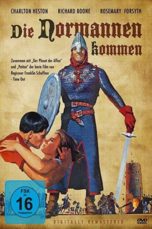

#8674 Die Normannen kommen
Alternativ: The War Lord
 
 IMDB-Wertung: 6.9 / 10
IMDB-Wertung: 6.9 / 10  Metascore: 0
Metascore: 0 
Flandern im 11. Jahrhundert: Der normannische Ritter Chrysagon hat die Friesen in die Flucht geschlagen und damit ein Druidendorf vor dem sicheren Untergang gerettet. Doch die Bevölkerung wendet sich gegen ihn, als er sich ausgerechnet in die schöne Brownyn verliebt, die dem Sohn des Stammesfürsten versprochen wurde.
Jahr: 1965
Dauer: 121 Minuten
FSK: 16
Land: USA Studio: A Universal Picture ®Tonspuren:
Untertitel:
Auflösung: 1080p (1920x816) Größe: 11366 MB
Genre: Drama, Geschichte
Regisseur: Franklin J. Schaffner
Drehbuch: John Collier
Soundtrack: Jerome Moross, Hans J. Salter
Darsteller:
Datei: X:\1965\Normannen kommen, Die (1965, FSK16, 1920x816).mkv seit 24.04.2018
Festplatte: HD 1900-1970
 Es gibt insgesamt 25 Filme in der Gruppe '1965'
Es gibt insgesamt 25 Filme in der Gruppe '1965'